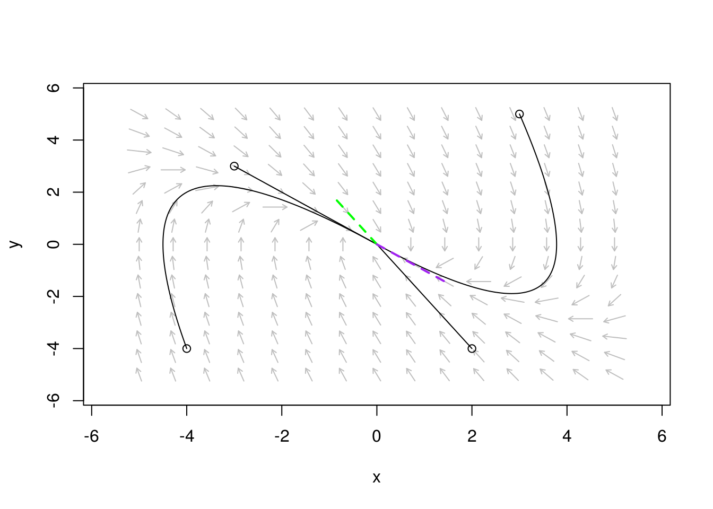
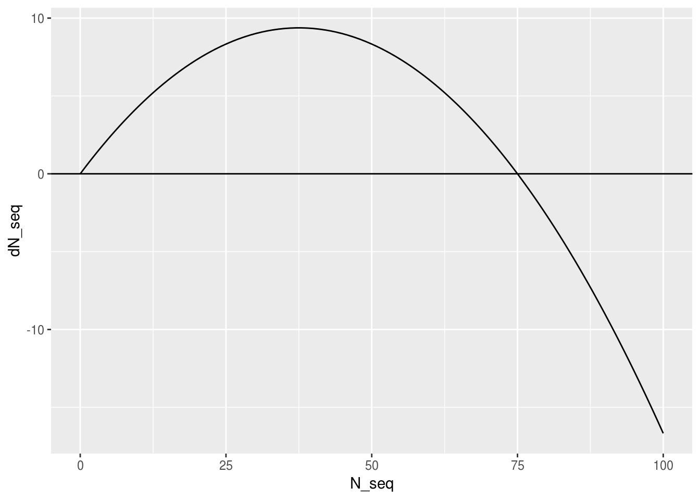
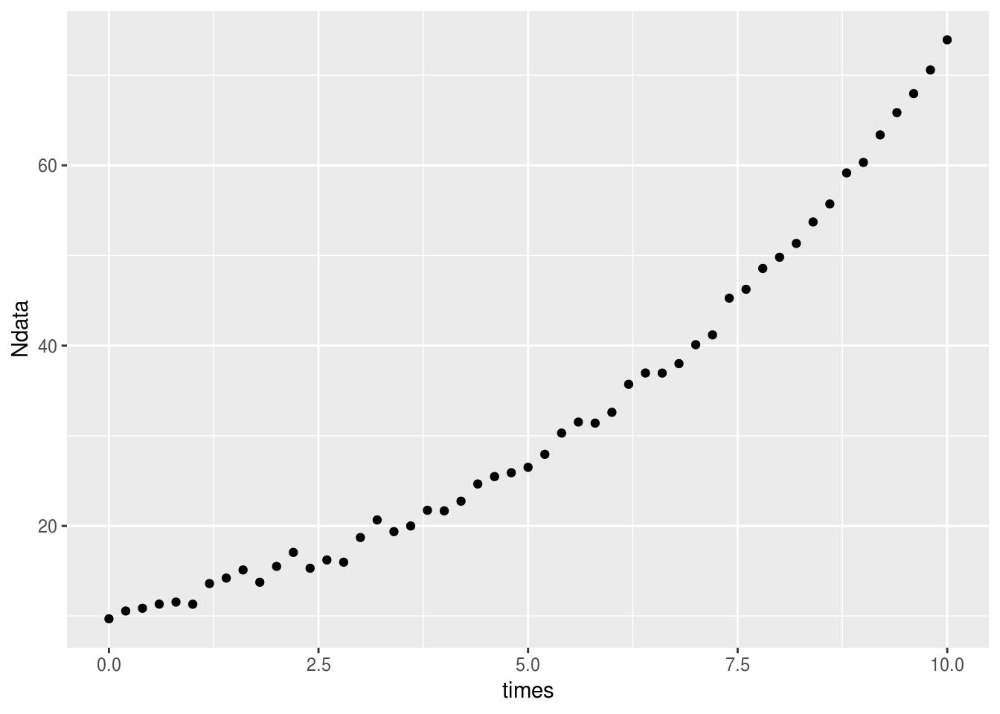
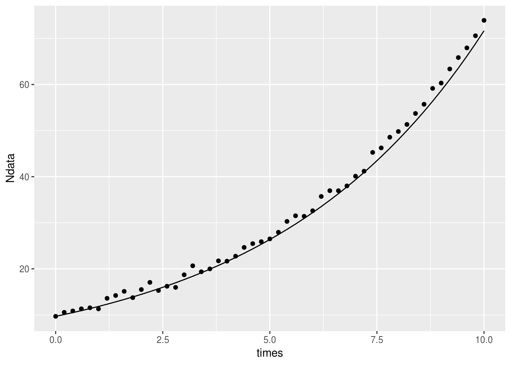
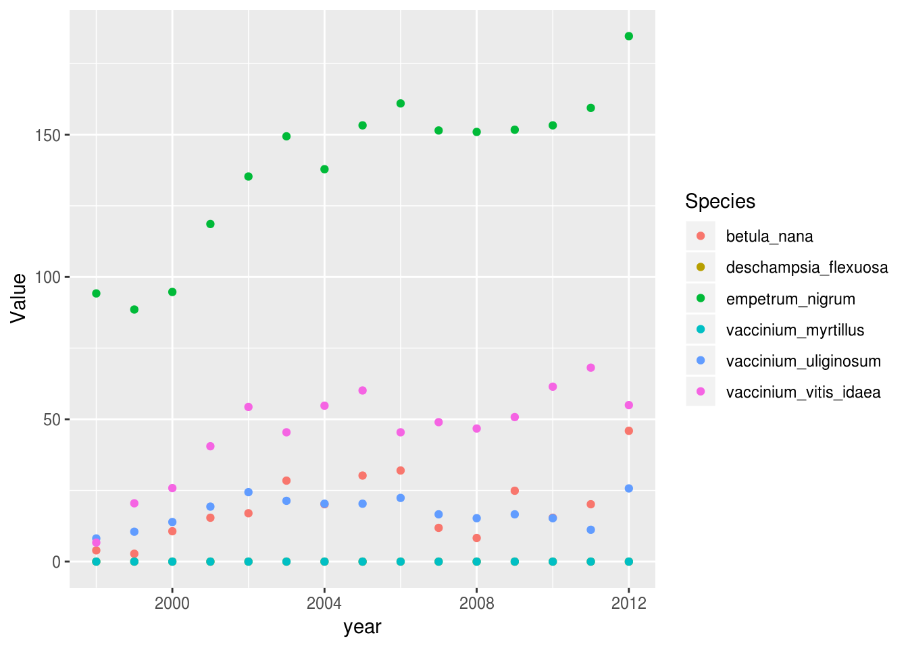
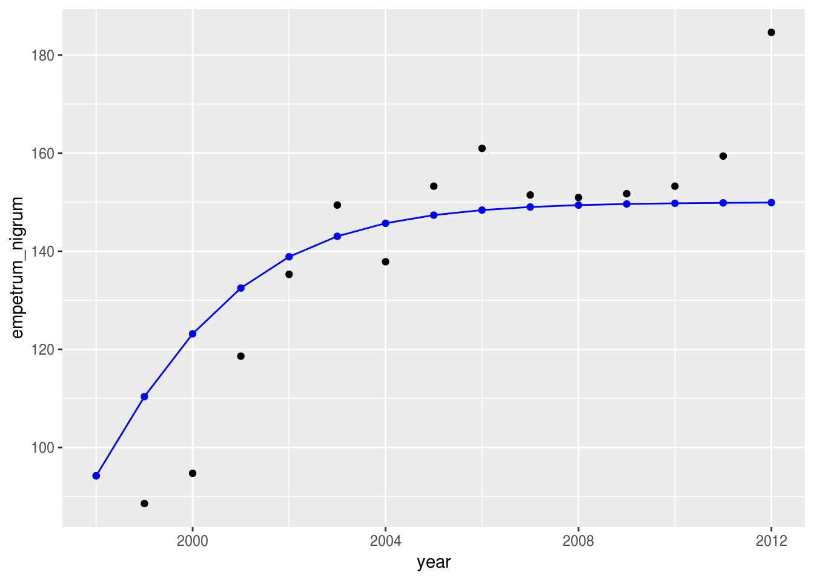
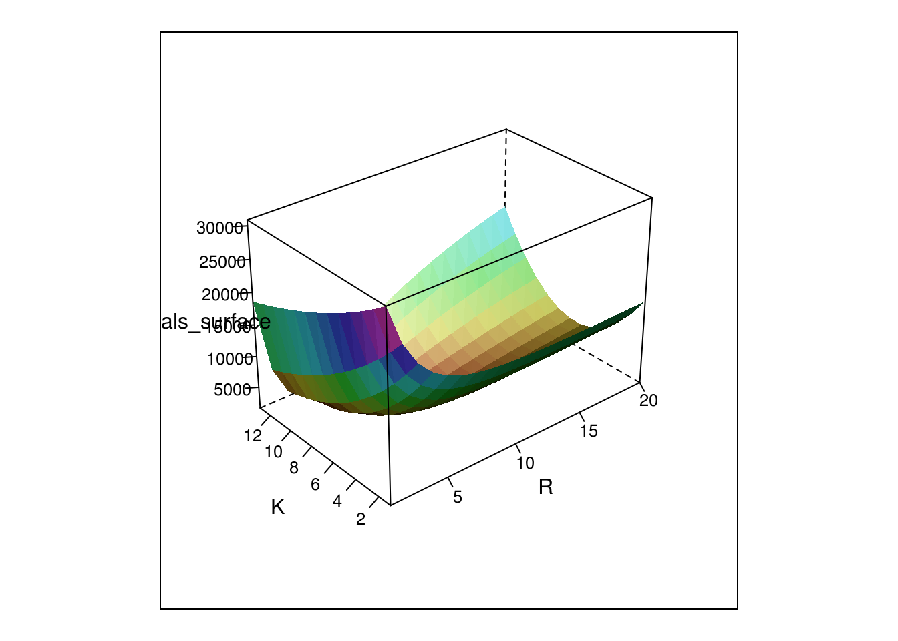
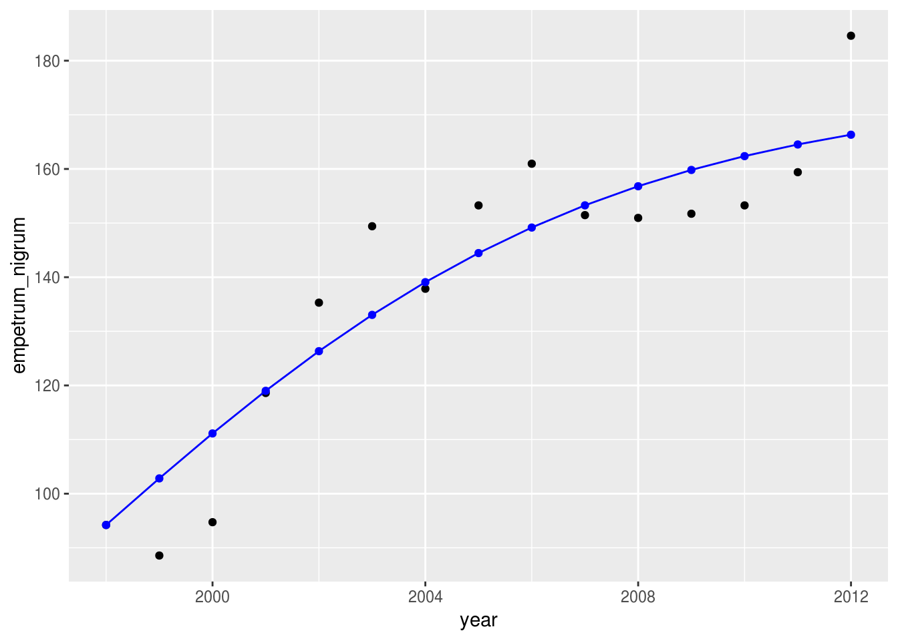

Fitting models to data
Madeleine Bonsma-Fisher
Lesson preamble
Learning objectives
- Appreciate bifurcations in models
- Use least squares to fit a model to data
Lesson outline
Total lesson time: 2 hours
- Review eigenvalues and eigenvectors (10 minutes)
- Vectorizing linear systems of differential equations: another perspective on eigenvalues (20 minutes)
- Bifurcations (20 minutes)
- Fitting models to data
- Fitting simulated data for a single parameters (20 minutes)
- Fitting real data for two parameters (40 minutes)
Setup
- Download this plant biomass dataset and put it in your working directory.
install.packages('lattice')install.packages('phaseR')install.packages('deSolve')install.packages('ggplot2')(ortidyverse)install.packages('dplyr')(ortidyverse)install.packages('tidyr')(ortidyverse)
Recap: quantitative analysis of fixed points and stability
Here are the steps to quantitatively analyze a model. These steps are written for a two-dimensional system, but they can be applied to a system of any number of dimensions.
This is a generic two-dimensional system. There are two differential equations, and each is a function of both \(x\) and \(y\).
\[ \frac{dx}{dt} = f(x, y) \\ \frac{dy}{dt} = g(x,y)\]
Fixed points: Find all combinations of \(x\) and \(y\) that satisfy \(f(x, y) = 0\) and \(g(x, y) = 0\).
Stability: Calculate the Jacobian matrix and find its eigenvalues for each fixed point. This is the Jacobian matrix:
\[J=\begin{bmatrix} \frac{\partial f}{\partial x} & \frac{\partial f}{\partial y} \\ \frac{\partial g}{\partial x} & \frac{\partial g}{\partial y} \end{bmatrix}\]
- Find eigenvalues at each fixed point using the function
eigenin R, or by solving the equation \(\text{Det}(A - \lambda \mathbb{1}) = 0\). - For a set of eigenvalues (\(\lambda_1\), \(\lambda_2\)):
- If all eigenvalues have negative real parts, the fixed point is stable.
- If one or more eigenvalues has a positive real part, the fixed point is unstable.
- If the eigenvalues have an imaginary (complex) part, the fixed point is oscillatory.
Vectorizing systems of differential equations
To see why eigenvalues tell us about the stability of a fixed point, let’s look at a linear system of differential equations and its solution.
Consider this system of differential equations:
\[\frac{d x_1}{dt}=Ax_1+Bx_2 \\ \frac{d x_2}{dt} = Cx_1+Dx_2\]
This system is linear: each term only has either \(x_1\) or \(x_2\) in it, and there are no terms that have higher powers of \(x_1\) and \(x_2\) (such as \(x_1 x_2\) or \(x_1^2\)).
Because it’s linear, this system can be written as a matrix equation:
\[\frac{d \vec{x}}{dt} = E\vec{x}\]
where \(\vec{x}\) is two-element vector \((x_1,x_2)\), \(\frac{d \vec{x}}{dt}\) is also a two-element vector \((\frac{d x_1}{dt}, \frac{d x_2}{dt})\), and
\[E=\begin{bmatrix} A & B \\ C & D \end{bmatrix}\]
To solve this, we assume that solutions exist of the form \(\vec{x} = \text{e}^{\lambda t} \vec{v}\), where \(\vec{v}\) is an unknown fixed vector (basically a “direction”), and \(\lambda\) is a growth rate, also unknown. If we can find solutions of this form, we know they correspond to exponential growth or decay in the direction described by \(\vec{v}\).
Plugging \(\vec{x}\) into the vector equation above:
\[ \frac{d \vec{x}}{dt} = \frac{d}{dt} \text{e}^{\lambda t} \vec{v} = \lambda\text{e}^{\lambda t} \vec{v} \]
\[\lambda\text{e}^{\lambda t} \vec{v} = E \text{e}^{\lambda t} \vec{v} \\ E\vec{v} = \lambda \vec{v}\]
This is an eigenvalue-eigenvector equation, which means that the directions we were after are the eigenvectors of \(E\), and the growth rates are the eigenvalues.
Linear system example
\[\frac{dx}{dt} = y \\ \frac{dy}{dt} = -2x - 3y\]
The matrix form of this system is
\[\frac{d \vec{x}}{dt} = E\vec{x}\]
where the matrix \(E\) is
\[E = \begin{bmatrix} 0 & 1 \\ -2 & -3 \end{bmatrix}\]
To solve this system, we look for eigenvalues and eigenvectors of \(E\):
E <- matrix(c(0, 1,
-2, -3),
ncol = 2,
byrow = TRUE)
eigenvalues <- eigen(E)$values
eigenvectors <- eigen(E)$vectorsLet’s look at the eigenvectors on a phase portrait.
library(phaseR)
linear_system <- function(t, y, parameters) {
X <- y[1] # prey
Y <- y[2] # predators
# calculate rate of change
dx <- Y
dy <- -2 * X - 3 * Y
# return rate of change
return(list(c(dx, dy)))
}
# plot vector field: on a grid of points, plot an arrow in the direction of dx/dt and dy/dt
pp_flowField <- flowField(linear_system, xlim = c(-5, 5), ylim = c(-5, 5),
points = 15, # this is the density of grid points on which to plot arrows
system = 'two.dim', # 'two.dim' is default
add = FALSE)
# add trajectories
pp_trajectory <- trajectory(linear_system,
# y0 is a matrix where each row is pairs of (X, Y)
y0 = matrix(c(2, -4,
-4, -4,
-3, 3,
3, 5),
ncol = 2,
byrow = TRUE),
tlim = c(0,30), # how far in time to calculate the trajectories
system = "two.dim")## Note: col has been reset as required# eigenvector for eigenvalue lambda = -2
lines(x = c(0, 2*eigenvectors[1]), y = c(0, 2*eigenvectors[2]), lty = 2, lwd = 2, col = 'green')
# eigenvector for eigenvalue lambda = -1
lines(x = c(0, 2*eigenvectors[3]), y = c(0, 2*eigenvectors[4]), lty = 2, lwd = 2, col = 'purple')
The two eigenvector directions \(\vec{v_1}\) and \(\vec{v_2}\) (green and purple dashed lines) represent the directions in which the flow follows \(\text{e}^{\lambda_1 t} \vec{v_1}\) or \(\text{e}^{\lambda_2 t} \vec{v_2}\). Other trajectories can be linear combinations of these two solutions:
\[\vec{x}(t) =c_l \text{e}^{\lambda_1 t} \vec{v_1} + c_2 \text{e}^{\lambda_2 t} \vec{v_2}\]
Now we can see why the eigenvalues determine stability: in a linear (or linearized) system, the eigenvalues determine whether the system shows exponential growth, decay, or oscillations, because the model solution is a combination of exponential functions whose parameters are the eigenvalues.
By calculating the Jacobian for any system we encounter, we are converting the system into a linear system like the one above, and all the same logic applies.
Bifurcations
A bifurcation is a change in the number or stability of fixed points in a system as a function of one of the system parameters. This is a pretty abstract definition, so let’s look at an example right away.
A model of fishing
Here is a model that describes the population size of a species of fish as they are being hunted.
\[\frac{dN}{dt} = rN\left(1-\frac{N}{K}\right) - HN\]
In the absence of fishing, the population is assumed to grow logistically — this is the first term in the equation. The effects of fishing are modeled by the term \(- HN\), which says that fish are caught or “harvested” at a rate that depends on \(N\). This is plausible — when fewer fish are available, it is harder to find them and so the daily catch drops.
Challenge
Find the fixed points analytically for this system.
Right away, we can see something interesting about one of the fixed points. If \(H > r\), then the second fixed point becomes negative. In a real population, there would now be only a single fixed point at \(N=0\) since \(N\) can’t be negative.
Next, let’s look at the stability analytically. We calculate \(\frac{\partial f(N)}{\partial N}\) and evaluate it at each fixed point, where \(f(N) = rN(1-\frac{N}{K}) - HN\).
\[\frac{\partial f(N)}{\partial N} = \frac{\partial}{\partial N} \left(rN(1-\frac{N}{K}) - HN \right) \\ =r - \frac{2rN}{K} - H\]
For the fixed point \(N=0\):
\[\frac{\partial f(N)}{\partial N} = r-H\]
This is positive if \(r > H\) and negative if \(r < H\). This means \(H = r\) is a bifurcation point: at this value of \(H\) (assuming \(r\) is fixed), this fixed point changes stability.
For the fixed point \(N = K\left(1-\frac{H}{r}\right)\):
\[\frac{\partial f(N)}{\partial N} = -r+H\]
This is positive if \(r < H\) and negative if \(r > H\). This fixed point also changes stability at the bifurcation point \(H = r\).
Finally, let’s plot \(dN/dt\) vs \(N\) and confirm our result.
First, define a function for the model.
fishing_model <- function(t, y, parameters) {
N <- y
r <- parameters['r']
K <- parameters['K']
H <- parameters['H']
dN <- r * N * (1 - N / K) - H * N
return(list(c(dN)))
}Next, we choose parameters and create a sequence to plot.
params <- c(r = 1, K = 150, H = 0.5)
N_seq <- seq(0, 100)
dN_seq <- fishing_model(t, y = N_seq, parameters = params)And finally we plot in the usual way.
library(ggplot2)
dN_seq <- unlist(dN_seq) # because our function returns a list, we need to convert it to numbers.
data <- data.frame(N_seq, dN_seq)
ggplot(data) +
geom_line(aes(x = N_seq, y = dN_seq)) +
geom_hline(yintercept = 0)
Fitting models to data
Finding data is a massive field, and there are many different strategies for choosing parameters for a model depending on the assumptions you make about your data and model. Today we will talk about arguably the most common way to fit data — least squares fitting. (Linear regression, which will be covered next class, is a special case of least squares fitting.) I will show you a method for doing ‘brute force’ least squares fitting so that you can fit any model you like using the same procedure, but there are special cases you might encounter in which there are faster and/or better ways to implement least squares fitting.
Fitting simulated data with a single parameter
Suppose we sample repeatedly from a bacterial population over time, and suppose we want to fit our sampled data to an exponential growth model.
Let’s simulate some data from an exponential function to work with.
times <- seq(0,10, by = 0.2) # sample times
r <- 0.2 # growth rate
N0 <- 10 # initial population
# use the function 'rnorm' to add noise to the data
Ndata <- N0*exp(r*times) + rnorm(n = length(times), mean = 0, sd = 0.75)
qplot(times,Ndata) # check with a plot
Now let’s assume we don’t know the growth rate \(r\) and we want to extract it from the data — we want to fit the data to an exponential growth model and find the value of \(r\) that gives the best fit.
To do this, we need a way to tell if a fit is good or bad. What criteria should we use to determine if a fit is good? One option is to just try several parameter values and try to manually adjust the parameter until the fit looks good. This is imprecise and not reproducible, but it’s often a good place to start to get an idea of what parameter range to check.
The idea behind least squares fitting is that we want to minimize the difference between our model’s prediction and the actual data, and we do that by minimizing the sum of the squares of the residuals. Residuals (or errors) are the difference between the model and the data for each data point. The purpose of taking the square of each residual is to take out the influence of the sign of the residual.
The sum of the squares of the residuals is just a number, and now we have a criteria we can use to determine which of two fits is better: whichever fit minimizes that number is the better fit.
In practice, there are many ways to find the particular parameter that gives the best fit. One way is to start at some parameter value, then start adjusting it by small amounts and checking if the fit gets better or worse. If it gets worse, go in a different direction. If it gets better, keep going in that direction until it either starts getting worse again or the amount by which it gets better is very small. This type of algorithm is called gradient descent.
Another option is to try a range of parameter values and choose the one that gives the best fit out of that list. This is simpler to implement than the previous algorithm, but it’s also computationally more costly — it can take a long time.
We will do some examples of the second method today, what we’ll call ‘brute-force least squares’.
# Make a range of r parameter values to try
r_vals <- seq(0.01, 0.3, by = 0.01)
# use the function 'sapply' to loop over r_vals list
resids_sq <- sapply(r_vals, function(r) {
prediction <- Ndata[1] * exp(r * times)
residuals <- prediction - Ndata
sum(residuals^2)
})Let’s plot the sum of residuals squared vs. \(r\) to find which value of \(r\) fits best:

We can see visually that the minimum is around \(r = 0.2\), but to extract that number from the list we can use the function which:
We got the ‘correct’ value of \(r\), the one that we originally used to simulate the data.
Finally, let’s plot the fit against the original data:

You can play around with this simulated data and see what happens to the fit if you change the amount of noise that gets added to the data.
Fitting models with two or more parameters
Now let’s fit a model with more parameters, and let’s use some real data.
# The dataset downloaded at the beginning
# https://uoftcoders.github.io/rcourse/data/plant-biomass-preprocess.csv
plant_data <- read.csv("plant-biomass-preprocess.csv")We can use our usual tricks to see what’s in our dataset:
summary(plant_data) # create a summary of the dataset
head(plant_data) # display the first few rows of the data
colnames(plant_data) # show the column namesLet’s plot just one of the habitats, sites, and treatments vs. time and colour by species.
##
## Attaching package: 'dplyr'## The following objects are masked from 'package:stats':
##
## filter, lag## The following objects are masked from 'package:base':
##
## intersect, setdiff, setequal, unionlibrary(tidyr)
plant_data %>%
filter(habitat == "Tundra") %>%
filter(site == 3) %>%
filter(treatment == "rodentexclosure") %>%
gather(Species, Value, -year, -treatment, -habitat, -site) %>%
ggplot() +
geom_point(aes(x = year, y = Value, color = Species))
Empetrum nigrum looks like it could be following logistic growth, so let’s try to fit the data to that model. First, let’s make a new variable with just the data we want to fit.
e_nigrum <- plant_data %>%
filter(site == 3) %>%
filter(habitat == "Tundra") %>%
filter(treatment == "rodentexclosure") %>%
select(year, empetrum_nigrum) Now we define a logistic model function so that we can numerically generate the model’s solution and compare it to the data.
logistic_fn <- function(t, state, parameters) {
# Calculates dN/dt for the logistic equation
# t: time point at which to evaluate derivative (doesn't actually change anything in this example)
# state: vector of variables (here it's just N)
# parameters: vector of model parameters c(r, K)
N <- state
r <- parameters[1] # the first element of the parameters vector is r
K <- parameters[2] # the second element of the parameters vector is K
#rate of change
dN <- r * N * (1 - N / K)
#return rate of change
return(list(c(dN)))
}Let’s try running a single numerical solution and plotting it alongside the data.
library(deSolve)
parameters <- c(r = 0.5, K = 150)
state <- c(N = e_nigrum[1,2]) # the first row and second column is the initial population size
times <- seq(0, 14, by = 1) # make the same time vector as the data
result <-
ode(
y = state,
times = times,
func = logistic_fn,
parms = parameters
)# Plot
result <- data.frame(result)
p1 <- ggplot(e_nigrum) +
geom_point(aes(x = year, y = empetrum_nigrum))
p1 +
geom_point(aes(x = time + 1998, y = N), result, color = 'blue') +
geom_line(aes(x = time + 1998, y = N), result, color = 'blue')
Now we’ll define a grid of \(r\) and \(K\) values to try, then calculate a numerical solution for each combination of parameters.
rvals <- seq(0.05, 1.0, by = 0.05)
Kvals <- seq(120, 180, by = 5)
# initialize empty matrix for likelihood calculation
residuals_surface = matrix(, nrow = length(rvals), ncol = length(Kvals))
# loop over values of r and k, calculate log likelihood
for (i in seq(length(rvals))){
for (j in seq(length(Kvals))){
result <- ode(y = state,
times = times,
func = logistic_fn,
parms = c(r = rvals[i], K = Kvals[j]))
result <- data.frame(result)
residuals <- result$N - e_nigrum$empetrum_nigrum
residuals_surface[i,j] <- sum(residuals^2)
}
}Added: The more R way of doing the above code is:
logistic_pred_fn <- function(r, K) {
result <- ode(y = state,
times = times,
func = logistic_fn,
parms = c(r = r, K = K))
result <- data.frame(result)
residuals <- result$N - e_nigrum$empetrum_nigrum
sum(residuals^2)
}
rvals <- seq(0.05, 1.0, by = 0.05)
Kvals <- seq(120, 180, by = 5)
# Create a two column data frame with every combination of rvals and Kvals
params <- expand.grid(r = rvals, K = Kvals)
# Apply the logistic_pred_fn to each combination of rvals and Kvals.
# This is known as vectorization, which is R's strength.
resids <- mapply(logistic_pred_fn,
params$r, # First arg in logistic_pred_fn
params$K) # Second arg in logistic_pred_fn
resids <- matrix(resids, nrow = length(rvals), ncol = length(Kvals))
# Check if they are the same
identical(resids, residuals_surface)## [1] TRUEWe can use the library lattice to plot the surface:
library(lattice)
wireframe(
residuals_surface,
shade = TRUE,
xlab = "R",
ylab = "K",
scales = list(arrows = FALSE) # fix so that axes are correct numbers
) 
Now we extract the values of \(r\) and \(K\) that minimize the sum of residuals:
best_fit <- which(residuals_surface == min(residuals_surface), arr.ind = TRUE)
r_fit <- rvals[best_fit[1]] # r is varied across the rows of the surface
K_fit <- Kvals[best_fit[2]] # K is varied across the columns of the surfaceAnd now we can plot the best fit curve with the data:
result <-
ode(
y = state,
times = times,
func = logistic_fn,
parms = c(r = r_fit, K = K_fit)
)
result <- data.frame(result)
p2 <- ggplot(e_nigrum) +
geom_point(aes(x = year, y = empetrum_nigrum))
p2 +
geom_point(aes(x = time + 1998, y = N), result, color = 'blue') +
geom_line(aes(x = time + 1998, y = N), result, color = 'blue')
You can do this process with more than two parameters as well, but the search space will be larger and the simulations necessary will take longer.
Assumptions of least squares
When is it appropriate to use least squares to fit your data?
Assumptions of least squares:
- The noise or error is Gaussian-distributed: the most likely value for a data point is the predicted value, but there is a Gaussian distribution with some width that determines how likely it is that the data will have a different value.
- All data points have the same variance in their error: the width of the Gaussian distribution governing the error is the same for each data point. This can be modified though if it’s not a good assumption.
- The noise or error is only in the dependent variable(s), not in the independent variable(s).
- Each data point is independent of the other data points.
Note: in all this talk of fitting, what we’re doing doesn’t tell us which model fits our data best, only what parameters for a particular model fit best. The choice of model is up to us. There are ways to distinguish between fits for different models which will be discussed next class.
Extras: Maximum Likelihood
Maximum likelihood is a way of finding parameters of a given probability distribution that best match data. It answers the question: which paremeter(s) make the data most likely to have occured?
Likelihood is defined as \(P(\text{data} | \text{model})\), which you can read as the probability of the data given the model. This is subtly different from \(P(\text{model} | \text{data})\), the probability of the model given the data, which is what you’re really after. But according to Bayes’ theorem, these two quantities are proportional, and so in practice, maximizing the likelihood is equivalent to maximizing the probability of a particular model given your data.
Bayes’ theorem, for the curious:
\[ P(A | B) = \frac{P(B | A)P(A)}{P(B)}\]
Least squares from maximum likelihood
Least squares is the maximum likelihood solution for the assumption that errors are Gaussian distributed. This assumption can be formulated like this: for a set of data \(y\) as a function of \(x\), let \(e_i\) be the difference between the predicted and measured value of \(y\) at point \(x_i\). We assume \(e_i\) follows a Gaussian or normal distribution with mean \(0\) and variance \(\sigma\):
\[P(e_i) = \frac{1}{\sqrt{2 \pi \sigma^2}} \text{e}^{-\frac{e_i^2}{2\sigma^2}}\]
We also assume that each data point \(y_i\) is independent, so the probability for the entire dataset is a product of all the probabilities for each data point:
\[P(\vec{e}) = P(e_1)P(e_2) ... P(e_N) = \prod_{i=1}^N P(e_i) \]
This is the likelihood, this is the quantity we want to maximize. To make our lives easier, we can also maximize the logarithm of the likelihood instead, since the logarithm is an increasing function and its maximum will still be in the same spot.
The log-likelihood is
\[\sum_{i=1}^N \text{log}P(e_i) = \sum_{i=1}^N \left( \text{log} \frac{1}{\sqrt{2 \pi \sigma^2}} - \frac{e_i^2}{2\sigma^2} \right)\]
\[ = N \text{log} \frac{1}{\sqrt{2 \pi \sigma^2}} - \frac{1}{2\sigma^2}\sum_{i=1}^N e_i^2\]
The first term is a constant, and so we can forget about it when looking for the maximum. What we’re left with is wanting to maximize
\[- \frac{1}{2\sigma^2}\sum_{i=1}^N e_i^2\]
Since \(\sigma\) is a constant, we can drop the prefactor as well. Finally, we can change the sign and minimize what’s left:
\[\sum_{i=1}^N e_i^2\]
But remember that \(e_i\) is just the difference between the predicted \(y_i\) and the actual data point \(y_i\), so the quantity above is just the sum of the squares of the residuals, exactly what we want to minimize in least squares.
Extras: using the analytic solution for a model to fit data
Instead of simulating the model, if you know the analytic solution you can use it directly like we did with the exponential model.
This is the analytic solution for the logistic model:
\[N(t) = \frac{N_0 K\text{e}^{rt}}{N_0(\text{e}^{rt}-1)+K}\]
logistic_solution <- function(N0, t, r, K) {
# Calculates N at time t using the analytic solution for the logistic equation
# N0: initial population size
# t: time at which to calculate N
# r: growth rate
# K: carrying capacity
C <- (K-N0)/N0 # constant of integration
N <- K*exp(r*t)/(exp(r*t)+C)
return(N)
}rvals = seq(0.05, 1.0, by = 0.05)
Kvals = seq(120, 180, by = 5)
residuals_surface = matrix( , nrow = length(rvals), ncol = length(Kvals)) # initialize matrix for likelihood calculation
initial_condition <- c(N = e_nigrum[1,2])
times <- seq(0, 14, by = 1) # make the same time vector as the data
# loop over values of r and k, calculate log likelihood
for (i in seq(length(rvals))){
for (j in seq(length(Kvals))){
Ndata <- logistic_solution(initial_condition, times, rvals[i], Kvals[j])
result <- data.frame(times, Ndata)
residuals <- result$N - e_nigrum$empetrum_nigrum
residuals_surface[i,j] <- sum(residuals^2)
}
}Now to extract the values of \(r\) and \(K\) that minimize the sum of residuals:
best_fit <- which(residuals_surface == min(residuals_surface), arr.ind = TRUE)
r_fit <- rvals[best_fit[1]] # r is varied across the rows of the surface
K_fit <- Kvals[best_fit[2]] # K is varied across the columns of the surfaceresult <- ode(y = state, times = times, func = logistic_fn, parms = c(r = r_fit, K = K_fit))
result <- data.frame(result)
p2 <- ggplot(e_nigrum) +
geom_point(aes(x = year, y = empetrum_nigrum))
p2 +
geom_point(aes(x = time + 1998, y = N), result, color = 'blue') +
geom_line(aes(x = time + 1998, y = N), result, color = 'blue')This work is licensed under a Creative Commons Attribution 4.0 International License. See the licensing page for more details about copyright information.